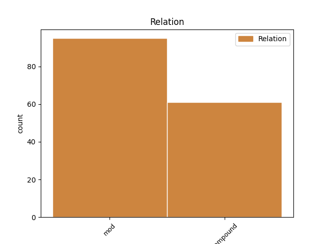
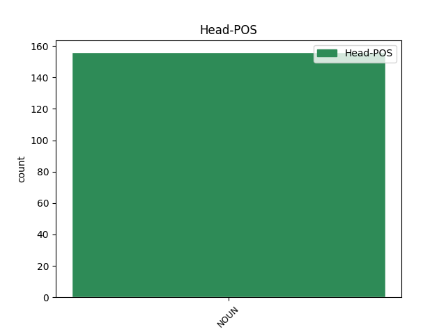
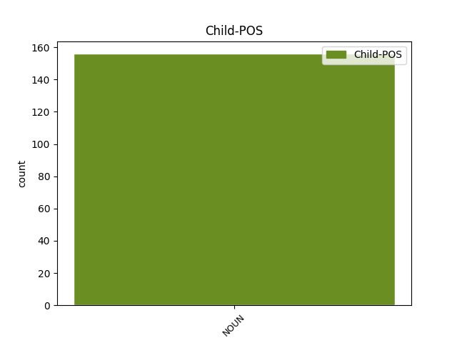

Distribution of features within this leaf



Agreement Rules sorted by frequency.
- When the dependent token is the modifer(mod) of the head token, and the dependent token is NOUN.
1 Conformément _ _ _ _ 0 _ _ _
2 à _ _ _ _ 0 _ _ _
3 l' _ _ _ _ 0 _ _ _
4 article _ _ _ _ 0 _ _ _
5 13 _ _ _ _ 0 _ _ _
6 de _ _ _ _ 0 _ _ _
7 la _ _ _ _ 0 _ _ _
8 décision _ _ _ _ 0 _ _ _
9 de _ _ _ _ 0 _ _ _
10 le _ _ _ _ 0 _ _ _
11 conseil _ _ _ _ 0 _ _ _
12 de _ _ _ _ 0 _ _ _
13 le _ _ _ _ 0 _ _ _
14 17 _ _ _ _ 0 _ _ _
15 décembre _ _ _ _ 0 _ _ _
16 2001 _ _ _ _ 0 _ _ _
17 établissant _ _ _ _ 0 _ _ _
18 un _ _ _ _ 0 _ _ _
19 programme _ _ _ _ 0 _ _ _
20 d' _ _ _ _ 0 _ _ _
21 action _ _ _ _ 0 _ _ _
22 en _ _ _ _ 0 _ _ _
23 matière _ _ _ _ 0 _ _ _
24 d' _ _ _ _ 0 _ _ _
25 échanges _ _ _ _ 0 _ _ _
26 , _ _ _ _ 0 _ _ _
27 d' _ _ _ _ 0 _ _ _
28 assistance _ _ _ _ 0 _ _ _
29 et _ _ _ _ 0 _ _ _
30 de _ _ _ _ 0 _ _ _
31 formation _ _ _ _ 0 _ _ _
32 , _ _ _ _ 0 _ _ _
33 pour _ _ _ _ 0 _ _ _
34 la _ _ _ _ 0 _ _ _
35 protection _ _ _ _ 0 _ _ _
36 de _ _ _ _ 0 _ _ _
37 l' _ _ _ _ 0 _ _ _
38 euro _ _ _ _ 0 _ _ _
39 contre _ _ _ _ 0 _ _ _
40 le _ _ _ _ 0 _ _ _
41 faux faux NOUN S Gender=Masc 42 mod _ _
42 monnayage monnayage NOUN S Gender=Masc|Number=Sing 0 _ _ _
43 ( _ _ _ _ 0 _ _ _
44 le _ _ _ _ 0 _ _ _
45 programme _ _ _ _ 0 _ _ _
46 « _ _ _ _ 0 _ _ _
47 Pericles _ _ _ _ 0 _ _ _
48 » _ _ _ _ 0 _ _ _
49 ) _ _ _ _ 0 _ _ _
50 , _ _ _ _ 0 _ _ _
51 et _ _ _ _ 0 _ _ _
52 compte _ _ _ _ 0 _ _ _
53 tenu _ _ _ _ 0 _ _ _
54 de _ _ _ _ 0 _ _ _
55 le _ _ _ _ 0 _ _ _
56 rapport _ _ _ _ 0 _ _ _
57 d' _ _ _ _ 0 _ _ _
58 évaluation _ _ _ _ 0 _ _ _
59 Pericles _ _ _ _ 0 _ _ _
60 de _ _ _ _ 0 _ _ _
61 le _ _ _ _ 0 _ _ _
62 30 _ _ _ _ 0 _ _ _
63 novembre _ _ _ _ 0 _ _ _
64 2004 _ _ _ _ 0 _ _ _
65 , _ _ _ _ 0 _ _ _
66 il _ _ _ _ 0 _ _ _
67 est _ _ _ _ 0 _ _ _
68 proposé _ _ _ _ 0 _ _ _
69 de _ _ _ _ 0 _ _ _
70 proroger _ _ _ _ 0 _ _ _
71 et _ _ _ _ 0 _ _ _
72 de _ _ _ _ 0 _ _ _
73 modifier _ _ _ _ 0 _ _ _
74 la _ _ _ _ 0 _ _ _
75 décision _ _ _ _ 0 _ _ _
76 de _ _ _ _ 0 _ _ _
77 le _ _ _ _ 0 _ _ _
78 conseil _ _ _ _ 0 _ _ _
79 . _ _ _ _ 0 _ _ _
1 Maintenant _ _ _ _ 0 _ _ _
2 supposons _ _ _ _ 0 _ _ _
3 qu' _ _ _ _ 0 _ _ _
4 à _ _ _ _ 0 _ _ _
5 la _ _ _ _ 0 _ _ _
6 place _ _ _ _ 0 _ _ _
7 de _ _ _ _ 0 _ _ _
8 chips chip NOUN S Gender=Masc|Number=Plur 0 _ _ _
9 polystyrène polystyrène NOUN S Gender=Masc 8 compound _ SpaceAfter=No
10 , _ _ _ _ 0 _ _ _
11 on _ _ _ _ 0 _ _ _
12 prenne _ _ _ _ 0 _ _ _
13 ces _ _ _ _ 0 _ _ _
14 délicieux _ _ _ _ 0 _ _ _
15 petits _ _ _ _ 0 _ _ _
16 chocolats _ _ _ _ 0 _ _ _
17 qu' _ _ _ _ 0 _ _ _
18 on _ _ _ _ 0 _ _ _
19 nous _ _ _ _ 0 _ _ _
20 donne _ _ _ _ 0 _ _ _
21 et _ _ _ _ 0 _ _ _
22 qu' _ _ _ _ 0 _ _ _
23 on _ _ _ _ 0 _ _ _
24 joue _ _ _ _ 0 _ _ _
25 avec _ _ _ _ 0 _ _ _
26 . _ _ _ _ 0 _ _ _
Disagree Examples:
1 L' _ _ _ _ 0 _ _ _
2 acceptant _ _ _ _ 0 _ _ _
3 peut _ _ _ _ 0 _ _ _
4 reproduire _ _ _ _ 0 _ _ _
5 , _ _ _ _ 0 _ _ _
6 distribuer _ _ _ _ 0 _ _ _
7 , _ _ _ _ 0 _ _ _
8 représenter _ _ _ _ 0 _ _ _
9 ou _ _ _ _ 0 _ _ _
10 communiquer _ _ _ _ 0 _ _ _
11 à _ _ _ _ 0 _ _ _
12 le _ _ _ _ 0 _ _ _
13 public _ _ _ _ 0 _ _ _
14 une _ _ _ _ 0 _ _ _
15 oeuvre _ _ _ _ 0 _ _ _
16 dite _ _ _ _ 0 _ _ _
17 dérivée _ _ _ _ 0 _ _ _
18 y _ _ _ _ 0 _ _ _
19 compris _ _ _ _ 0 _ _ _
20 par _ _ _ _ 0 _ _ _
21 voie _ _ _ _ 0 _ _ _
22 numérique _ _ _ _ 0 _ _ _
23 uniquement _ _ _ _ 0 _ _ _
24 sous _ _ _ _ 0 _ _ _
25 les _ _ _ _ 0 _ _ _
26 termes _ _ _ _ 0 _ _ _
27 de _ _ _ _ 0 _ _ _
28 ce _ _ _ _ 0 _ _ _
29 contrat _ _ _ _ 0 _ _ _
30 , _ _ _ _ 0 _ _ _
31 ou _ _ _ _ 0 _ _ _
32 d' _ _ _ _ 0 _ _ _
33 une _ _ _ _ 0 _ _ _
34 version _ _ _ _ 0 _ _ _
35 ultérieure _ _ _ _ 0 _ _ _
36 de _ _ _ _ 0 _ _ _
37 ce _ _ _ _ 0 _ _ _
38 contrat _ _ _ _ 0 _ _ _
39 comprenant _ _ _ _ 0 _ _ _
40 les _ _ _ _ 0 _ _ _
41 mêmes _ _ _ _ 0 _ _ _
42 options _ _ _ _ 0 _ _ _
43 de _ _ _ _ 0 _ _ _
44 le _ _ _ _ 0 _ _ _
45 contrat _ _ _ _ 0 _ _ _
46 que _ _ _ _ 0 _ _ _
47 le _ _ _ _ 0 _ _ _
48 présent _ _ _ _ 0 _ _ _
49 contrat _ _ _ _ 0 _ _ _
50 , _ _ _ _ 0 _ _ _
51 ou _ _ _ _ 0 _ _ _
52 un _ _ _ _ 0 _ _ _
53 contrat _ _ _ _ 0 _ _ _
54 Creative _ _ _ _ 0 _ _ _
55 Commons _ _ _ _ 0 _ _ _
56 Icommons _ _ _ _ 0 _ _ _
57 comprenant _ _ _ _ 0 _ _ _
58 les _ _ _ _ 0 _ _ _
59 mêmes _ _ _ _ 0 _ _ _
60 options _ _ _ _ 0 _ _ _
61 de _ _ _ _ 0 _ _ _
62 le _ _ _ _ 0 _ _ _
63 contrat _ _ _ _ 0 _ _ _
64 que _ _ _ _ 0 _ _ _
65 le _ _ _ _ 0 _ _ _
66 présent _ _ _ _ 0 _ _ _
67 contrat _ _ _ _ 0 _ _ _
68 ( _ _ _ _ 0 _ _ _
69 par _ _ _ _ 0 _ _ _
70 exemple exemple NOUN S Gender=Masc|Number=Sing 71 mod _ _
71 paternité paternité NOUN S Gender=Fem|Number=Sing 0 _ _ _
72 - _ _ _ _ 0 _ _ _
73 pas _ _ _ _ 0 _ _ _
74 d' _ _ _ _ 0 _ _ _
75 utilisation _ _ _ _ 0 _ _ _
76 commerciale _ _ _ _ 0 _ _ _
77 - _ _ _ _ 0 _ _ _
78 Partage _ _ _ _ 0 _ _ _
79 de _ _ _ _ 0 _ _ _
80 les _ _ _ _ 0 _ _ _
81 conditions _ _ _ _ 0 _ _ _
82 initiales _ _ _ _ 0 _ _ _
83 à _ _ _ _ 0 _ _ _
84 l' _ _ _ _ 0 _ _ _
85 Identique _ _ _ _ 0 _ _ _
86 2.0 _ _ _ _ 0 _ _ _
87 Japon _ _ _ _ 0 _ _ _
88 ) _ _ _ _ 0 _ _ _
89 . _ _ _ _ 0 _ _ _
1 À _ _ _ _ 0 _ _ _
2 l' _ _ _ _ 0 _ _ _
3 exception _ _ _ _ 0 _ _ _
4 de _ _ _ _ 0 _ _ _
5 les _ _ _ _ 0 _ _ _
6 garanties _ _ _ _ 0 _ _ _
7 d' _ _ _ _ 0 _ _ _
8 ordre _ _ _ _ 0 _ _ _
9 public _ _ _ _ 0 _ _ _
10 imposées _ _ _ _ 0 _ _ _
11 par _ _ _ _ 0 _ _ _
12 la _ _ _ _ 0 _ _ _
13 loi _ _ _ _ 0 _ _ _
14 applicable _ _ _ _ 0 _ _ _
15 et _ _ _ _ 0 _ _ _
16 de _ _ _ _ 0 _ _ _
17 les _ _ _ _ 0 _ _ _
18 réparations _ _ _ _ 0 _ _ _
19 imposées _ _ _ _ 0 _ _ _
20 par _ _ _ _ 0 _ _ _
21 le _ _ _ _ 0 _ _ _
22 régime _ _ _ _ 0 _ _ _
23 de _ _ _ _ 0 _ _ _
24 la _ _ _ _ 0 _ _ _
25 responsabilité _ _ _ _ 0 _ _ _
26 vis-à-vis _ _ _ _ 0 _ _ _
27 d' _ _ _ _ 0 _ _ _
28 un _ _ _ _ 0 _ _ _
29 tiers _ _ _ _ 0 _ _ _
30 en _ _ _ _ 0 _ _ _
31 raison _ _ _ _ 0 _ _ _
32 de _ _ _ _ 0 _ _ _
33 la _ _ _ _ 0 _ _ _
34 violation _ _ _ _ 0 _ _ _
35 de _ _ _ _ 0 _ _ _
36 les _ _ _ _ 0 _ _ _
37 garanties _ _ _ _ 0 _ _ _
38 prévues _ _ _ _ 0 _ _ _
39 par _ _ _ _ 0 _ _ _
40 l' _ _ _ _ 0 _ _ _
41 article _ _ _ _ 0 _ _ _
42 5 _ _ _ _ 0 _ _ _
43 de _ _ _ _ 0 _ _ _
44 le _ _ _ _ 0 _ _ _
45 présent _ _ _ _ 0 _ _ _
46 contrat _ _ _ _ 0 _ _ _
47 , _ _ _ _ 0 _ _ _
48 l' _ _ _ _ 0 _ _ _
49 offrant _ _ _ _ 0 _ _ _
50 ne _ _ _ _ 0 _ _ _
51 sera _ _ _ _ 0 _ _ _
52 en _ _ _ _ 0 _ _ _
53 aucun _ _ _ _ 0 _ _ _
54 cas _ _ _ _ 0 _ _ _
55 tenu _ _ _ _ 0 _ _ _
56 responsable _ _ _ _ 0 _ _ _
57 vis-à-vis _ _ _ _ 0 _ _ _
58 de _ _ _ _ 0 _ _ _
59 l' _ _ _ _ 0 _ _ _
60 acceptant _ _ _ _ 0 _ _ _
61 , _ _ _ _ 0 _ _ _
62 sur _ _ _ _ 0 _ _ _
63 la _ _ _ _ 0 _ _ _
64 base _ _ _ _ 0 _ _ _
65 d' _ _ _ _ 0 _ _ _
66 aucune _ _ _ _ 0 _ _ _
67 théorie _ _ _ _ 0 _ _ _
68 légale _ _ _ _ 0 _ _ _
69 ni _ _ _ _ 0 _ _ _
70 en _ _ _ _ 0 _ _ _
71 raison _ _ _ _ 0 _ _ _
72 de _ _ _ _ 0 _ _ _
73 aucun _ _ _ _ 0 _ _ _
74 préjudice _ _ _ _ 0 _ _ _
75 direct _ _ _ _ 0 _ _ _
76 , _ _ _ _ 0 _ _ _
77 indirect _ _ _ _ 0 _ _ _
78 , _ _ _ _ 0 _ _ _
79 matériel _ _ _ _ 0 _ _ _
80 ou _ _ _ _ 0 _ _ _
81 moral _ _ _ _ 0 _ _ _
82 , _ _ _ _ 0 _ _ _
83 résultant _ _ _ _ 0 _ _ _
84 de _ _ _ _ 0 _ _ _
85 l' _ _ _ _ 0 _ _ _
86 exécution _ _ _ _ 0 _ _ _
87 de _ _ _ _ 0 _ _ _
88 le _ _ _ _ 0 _ _ _
89 présent _ _ _ _ 0 _ _ _
90 contrat _ _ _ _ 0 _ _ _
91 ou _ _ _ _ 0 _ _ _
92 de _ _ _ _ 0 _ _ _
93 l' _ _ _ _ 0 _ _ _
94 utilisation _ _ _ _ 0 _ _ _
95 de _ _ _ _ 0 _ _ _
96 l' _ _ _ _ 0 _ _ _
97 oeuvre _ _ _ _ 0 _ _ _
98 , _ _ _ _ 0 _ _ _
99 y _ _ _ _ 0 _ _ _
100 compris _ _ _ _ 0 _ _ _
101 dans _ _ _ _ 0 _ _ _
102 l' _ _ _ _ 0 _ _ _
103 hypothèse _ _ _ _ 0 _ _ _
104 où _ _ _ _ 0 _ _ _
105 l' _ _ _ _ 0 _ _ _
106 offrant _ _ _ _ 0 _ _ _
107 avait _ _ _ _ 0 _ _ _
108 connaissance _ _ _ _ 0 _ _ _
109 de _ _ _ _ 0 _ _ _
110 la _ _ _ _ 0 _ _ _
111 possible _ _ _ _ 0 _ _ _
112 existence existence NOUN S Gender=Fem|Number=Sing 0 _ _ _
113 d' _ _ _ _ 0 _ _ _
114 un _ _ _ _ 0 _ _ _
115 tel _ _ _ _ 0 _ _ _
116 préjudice préjudice NOUN S Gender=Masc|Number=Sing 112 mod _ SpaceAfter=No
117 . _ _ _ _ 0 _ _ _
1 Comment _ _ _ _ 0 _ _ _
2 se _ _ _ _ 0 _ _ _
3 fait _ _ _ _ 0 _ _ _
4 -il _ _ _ _ 0 _ _ _
5 qu' _ _ _ _ 0 _ _ _
6 l' _ _ _ _ 0 _ _ _
7 on _ _ _ _ 0 _ _ _
8 ne _ _ _ _ 0 _ _ _
9 respecte _ _ _ _ 0 _ _ _
10 pas _ _ _ _ 0 _ _ _
11 les _ _ _ _ 0 _ _ _
12 zones zone NOUN S Gender=Fem|Number=Plur 0 _ _ _
13 non _ _ _ _ 0 _ _ _
14 fumeurs fumeur NOUN S Gender=Masc|Number=Plur 12 mod _ SpaceAfter=No
15 ? _ _ _ _ 0 _ _ _
1 Le _ _ _ _ 0 _ _ _
2 processus _ _ _ _ 0 _ _ _
3 visant _ _ _ _ 0 _ _ _
4 à _ _ _ _ 0 _ _ _
5 augmenter _ _ _ _ 0 _ _ _
6 les _ _ _ _ 0 _ _ _
7 marges marge NOUN S Gender=Masc|Number=Plur 0 _ _ _
8 , _ _ _ _ 0 _ _ _
9 les _ _ _ _ 0 _ _ _
10 garanties garantie NOUN S Gender=Fem|Number=Plur 7 mod _ _
11 de _ _ _ _ 0 _ _ _
12 sécurité _ _ _ _ 0 _ _ _
13 dans _ _ _ _ 0 _ _ _
14 les _ _ _ _ 0 _ _ _
15 transports _ _ _ _ 0 _ _ _
16 est _ _ _ _ 0 _ _ _
17 un _ _ _ _ 0 _ _ _
18 processus _ _ _ _ 0 _ _ _
19 qu' _ _ _ _ 0 _ _ _
20 il _ _ _ _ 0 _ _ _
21 convient _ _ _ _ 0 _ _ _
22 d' _ _ _ _ 0 _ _ _
23 améliorer _ _ _ _ 0 _ _ _
24 jour _ _ _ _ 0 _ _ _
25 après _ _ _ _ 0 _ _ _
26 jour _ _ _ _ 0 _ _ _
27 . _ _ _ _ 0 _ _ _
1 C' _ _ _ _ 0 _ _ _
2 est _ _ _ _ 0 _ _ _
3 une _ _ _ _ 0 _ _ _
4 bonne _ _ _ _ 0 _ _ _
5 chose _ _ _ _ 0 _ _ _
6 que _ _ _ _ 0 _ _ _
7 cette _ _ _ _ 0 _ _ _
8 directive _ _ _ _ 0 _ _ _
9 soit _ _ _ _ 0 _ _ _
10 arrêtée _ _ _ _ 0 _ _ _
11 maintenant _ _ _ _ 0 _ _ _
12 , _ _ _ _ 0 _ _ _
13 car _ _ _ _ 0 _ _ _
14 sinon _ _ _ _ 0 _ _ _
15 les _ _ _ _ 0 _ _ _
16 états _ _ _ _ 0 _ _ _
17 membres _ _ _ _ 0 _ _ _
18 seraient _ _ _ _ 0 _ _ _
19 obligés _ _ _ _ 0 _ _ _
20 de _ _ _ _ 0 _ _ _
21 modifier _ _ _ _ 0 _ _ _
22 leur _ _ _ _ 0 _ _ _
23 législation _ _ _ _ 0 _ _ _
24 nationale _ _ _ _ 0 _ _ _
25 pour _ _ _ _ 0 _ _ _
26 une _ _ _ _ 0 _ _ _
27 période _ _ _ _ 0 _ _ _
28 transitoire _ _ _ _ 0 _ _ _
29 très _ _ _ _ 0 _ _ _
30 courte _ _ _ _ 0 _ _ _
31 , _ _ _ _ 0 _ _ _
32 ce _ _ _ _ 0 _ _ _
33 qui _ _ _ _ 0 _ _ _
34 ne _ _ _ _ 0 _ _ _
35 ferait _ _ _ _ 0 _ _ _
36 qu' _ _ _ _ 0 _ _ _
37 entraîner _ _ _ _ 0 _ _ _
38 des _ _ _ _ 0 _ _ _
39 coûts _ _ _ _ 0 _ _ _
40 inutiles _ _ _ _ 0 _ _ _
41 et _ _ _ _ 0 _ _ _
42 augmenterait _ _ _ _ 0 _ _ _
43 encore _ _ _ _ 0 _ _ _
44 une _ _ _ _ 0 _ _ _
45 fois _ _ _ _ 0 _ _ _
46 le _ _ _ _ 0 _ _ _
47 mécontentement mécontentement NOUN S Gender=Masc|Number=Sing 0 _ _ _
48 de _ _ _ _ 0 _ _ _
49 les _ _ _ _ 0 _ _ _
50 gens _ _ _ _ 0 _ _ _
51 face face NOUN S Gender=Fem|Number=Sing 47 mod _ _
52 à _ _ _ _ 0 _ _ _
53 la _ _ _ _ 0 _ _ _
54 bureaucratie _ _ _ _ 0 _ _ _
55 communautaire _ _ _ _ 0 _ _ _
56 . _ _ _ _ 0 _ _ _